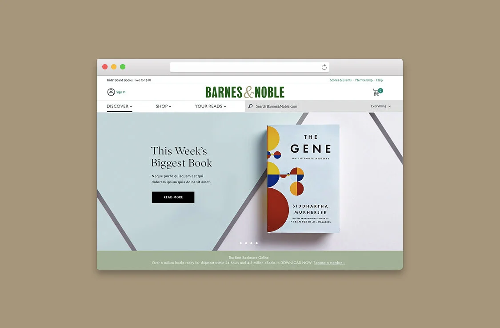
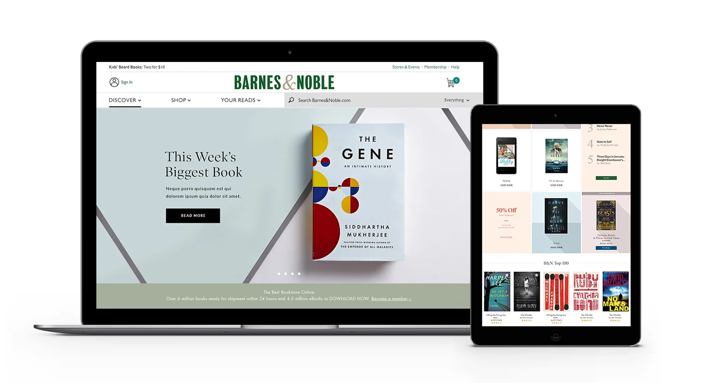
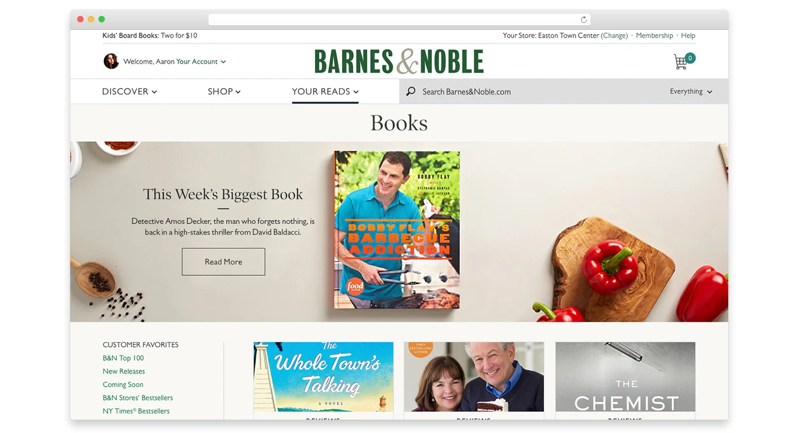
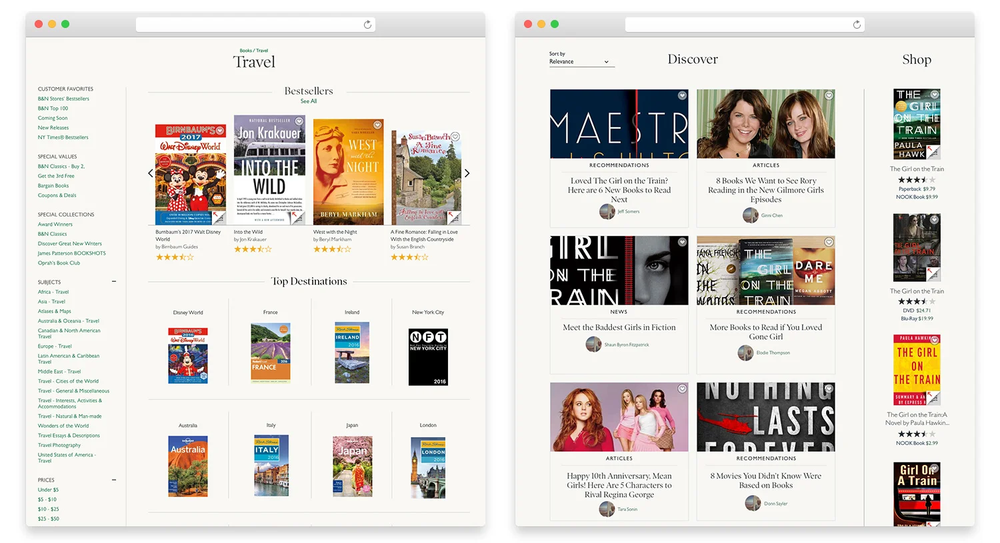
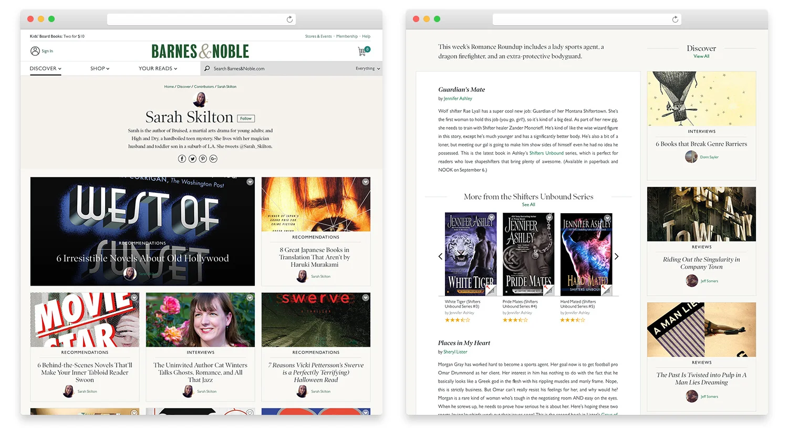
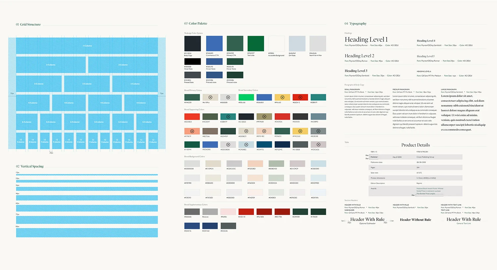
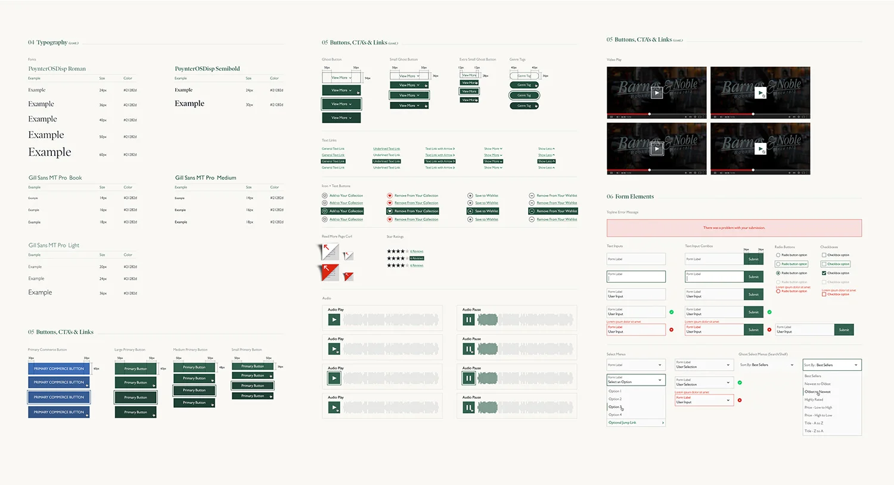

BN.com redesign
The Barnes & Noble homepage, book discovery pages, and a design system for BN.com.
- Client
- Barnes & Noble
- Role
- Product design lead, art direction
- Year
- 2017

Homepage and books
The BN.com homepage shown on a laptop and tablet, and a books landing page.


Discover and profiles
Travel and Discover browse pages, an author profile, and a featured article.


Design system
Grid, color, and type specs, plus buttons, links, and form elements.

